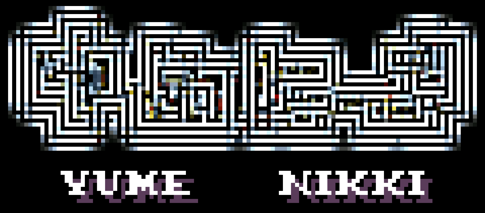

A dream exploration game.
| Article / Wiki | Play the game |
|---|---|
|
Wikipedia Fandom YumeWiki |
Steam YNOProject |
There are thousands of YNFGs on Roblox.
Check out the Roblox Yume Nikki Fangames webpage!
Many thanks to Amane's Iceberg for the list of RYNFGs.